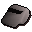

Magic whistle

| Config name | magic_whistle |
| Item id | 16 |
| Value | 10 gp |
| Weight | 5g |
| Members | Yes |
| Tradeable | No |
| Stackable | No |
| Options | Blow |
| Defined in | scripts/quests/quest_grail/configs/quest_grail.obj |
Magic whistle
A small tin whistle.
Show 6 ground spawns on the world map → Open in knowledge graph →
Ground spawns
| Area | Coordinates | Level | Count | Map |
|---|---|---|---|---|
| unlabelled | 2626, 4722 | 0 | 1 | view |
| unlabelled | 2627, 4728 | 0 | 1 | view |
| unlabelled | 2637, 4692 | 0 | 1 | view |
| unlabelled | 2755, 4728 | 0 | 1 | view |
| unlabelled | 2761, 4689 | 0 | 1 | view |
| unlabelled | 2806, 4710 | 0 | 1 | view |
Quests
Referenced in scripts
scripts/quests/quest_grail/scripts/quest_grail.rs2scripts/quests/quest_grail/scripts/sir_percival.rs2